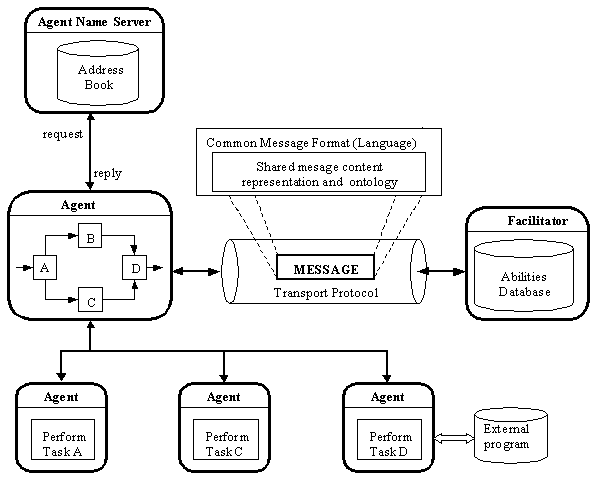

The Zeus Agent Building Toolkit |
Technical Manual |
| Contents | Introduction | Zeus Philosophy | Zeus Architecture | Communication | Coordination | Planning and Task Execution |
External Applications |
The notion of heterogeneous autonomous agents collaborating to solve problems is a powerful metaphor for the engineering of distributed and interoperable software systems. This agent-based approach introduces a new level of abstraction ¾ of knowledge level co-operation between autonomous systems ¾ that enhances distributed systems interoperability, scalability and re-configurability. However, thus far, the promise of the agent approach has been largely unrealised in the distributed software engineering community. This is due to a number of factors (including the current lack of standards for agent technology), but primarily because of the inherent complexity of constructing collaborative agent systems.
To facilitate large-scale realisation of the collaborative agent approach to distributed software engineering we felt frameworks, methodologies and toolkits were needed that would support the rapid development of multi-agent systems. This has led to the development of ZEUS, a toolkit for constructing collaborative multi-agent applications. ZEUS is a culmination of a careful synthesis of established agent technologies to provide an integrated environment for the rapid development of multi-agent systems. ZEUS defines a multi-agent system design approach and supports it with a visual environment for capturing user specification of agents that are used to generate Java source code of the agents.
The need for collaboration between agents occurs for any number of reasons; however, most are rooted in the problem of scarcity of resources – computing, information, know-how, etc. Since, individual agents possess different resources and capabilities, a solution to a given problem may be beyond the capabilities of any one agent, requiring that a number of agents pool their resources and collaborate with one another in order to solve the problem.
If such collaboration proceeds at the knowledge level it places significant demands on the agents. Not least are the need for a mechanism for information discovery through which agents discover the existence, network address, capabilities and/or roles of other agents; an agent-independent inter-agent communicating language that the agents use to communicate with one another; and an ontology that defines the application domain concepts being communicated between the agents. Furthermore, for effective and coherent problem solving, the agents need mechanisms for reasoning about their own and other agents’ problem solving capabilities and for co-ordinating their activities. In very dynamic environments, the problems are exacerbated by the additional requirements for data-driven reactive behaviour that integrates with the goal-driven deliberative activities of the agents. Finally, in some application domains, agent systems may need to interface with legacy systems such as databases.
Most of the issues associated with knowledge level multi-agent systems interoperation have received significant treatment, with a number of reasonably mature solutions or approaches proposed. In the following paragraphs we review the main techniques proposed for addressing the information discovery, communication, ontology, co-ordination and legacy software problems. Figure 1.1 is a context diagram illustrating the interplay between the various issues and their associated solutions.

Figure 1.1: Context diagram illustrating some of the issues involved in knowledge level multi-agent collaboration. The central agent needs to perform a complex task that requires it to collaborate with other agents. To do so, it uses the Facilitator to discover the agents with the required abilities, and the Agent Name Server to determine the addresses of these agents. The inter-agent communication language is used to communicate with the Agent Name Server, Facilitator and other agents. The communication requires a shared representation and understanding of common domain concepts, i.e. a common ontology.
This is typically handled using special-purpose utility agents such as nameservers and facilitators that function as society-wide white pages (address books) and yellow pages, providing a look-up service for agents’ addresses and abilities respectively. Thus, agents only need to register their address with a nameserver and their abilities with a facilitator to become visible to the society. For scalability and robustness, these utility agents might be arranged in hierarchies similar to that of Internet domain nameservers. In providing implementations of these utility agents, Zeus allows the developer to concentrate on building the application agents.
See also…
The need for an agent-independent agent communication language (ACL) has led to the development of the Knowledge Query and Manipulation Language (KQML) and the FIPA ACL. Most ACLs do not specify a syntax or semantics of the contents of the messages, with the rationale being that different application domains may require different content languages. Nonetheless, a number of general-purpose content languages have been developed, e.g. KIF (Knowledge Interchange Format), typically used with KQML, and FIPA SL the preferred content language for use with the FIPA ACL. Zeus implements the 1997 release of the FIPA ACL.
See also…
The Zeus Communication Components
Agents that communicate in a common language will still be unable to understand one another if they use different vocabularies for representing shared domain concepts. Therefore, they also need to use the same ontology or vocabularies of common concepts. This can be achieved either through general-purpose ontologies or by creating domain-specific ontologies and using inter-ontology translators to map between them. The argument for the latter is that most general-purpose ontologies are unlikely to include the intricacies of all possible domains, and are likely to be large and unnecessarily complex for most applications.
See also…
Co-ordinating the behaviour of multi-agent systems is an active area of research with many techniques in use. The main approaches can be broadly classified as organisational structuring, contracting, multi-agent planning, and negotiation. In organisational structuring the prior defined structure of the society (that is, the roles of the different agents and their relationships with one another) is exploited for co-ordination, as typified by client-server systems. Inter-agent coordination is handled by the Zeus coordination engine component.
Contracting as a co-ordination mechanism is typified by the classic contract-net protocol, [5], where a manager agent announces a contract, receives bids from other interested contractor agents, evaluates the bids and awards the contract to a winning contractor. Some interesting alternatives/variants to the contract-net protocol include various auction protocols such as the english, dutch and double auctions.
In multi-agent planning, the agents utilise classical AI planning techniques to plan their activities, resolving any foreseen conflicts. The planning normally takes one of two forms, centralised planning – in which a central agent performs the planning on behalf of the society, or decentralised planning – in which the agents exchange partial subplans, progressively elaborating the overall plan and resolving conflicts in it. Each Zeus agent possesses an internal Planner/Scheduler component to formulate and execute its plans.
With negotiation, the agents engage in dialogue, exchanging proposals with each other, evaluating other agents’ proposals and then modifying their own proposals until a state is reached when all agents are satisfied with the set of proposals. Typical negotiation mechanisms are based on game theory, on some form of planning, or on human-inspired negotiations.
See also…
As agents are not intended as replacements for legacy software, they must be able to interact with it. Generally speaking there are three possible approaches: the software could be rewritten, but this is a costly approach. Alternatively a separate piece of software called a transducer could be employed to act as an interpreter between the agent communication language and the native protocol of the legacy system. Or thirdly, the wrapper technique could be used to augment the legacy program with code that enables it to communicate using the inter-agent language. Zeus uses the latter approach providing an interface through which all of its internal components can be accessed or linked to external systems.
See also…
The sections of this manual return to these issues, explaining how they are resolved within the Zeus toolkit.
In Section 2, we outline the philosophy and assumptions underpinning the design of our agent building toolkit. Furthermore, we specify the type of agent systems the toolkit is designed to create, as well as the class of application domains of these agents.
In Section 3, we describe the Zeus toolkit architecture; this section provides an overview of the design of the entire toolkit. We describe its Agent Component Library, which is used to implement the generic Zeus agent, the visual agent creation environment, and the suite of Zeus utility agents.
Later sections then describe the implementation details of individual parts of the Agent Component Library, featuring the communication manager, the co-ordination engine, the planner, the internal event model, and the mechanisms for connecting to external (legacy) systems.
| Contents | Introduction | Zeus Philosophy | Zeus Architecture | Communication | Coordination | Planning and Task Execution |
External Applications |